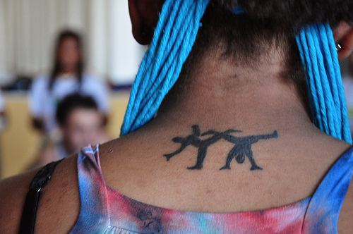

Проблемы с которыми сталкиваются активные женщины.

Помимо тренировок и фитнесса, активным женщинам приходится иметь дело с гораздо большим количеством вещей, чем их коллегам-мужчинам. Мы можем делать карьеру, растить детей, быть многозадачными, быть спортсменками, и всё это — одновременно. Конечно, мы также «имеем удовольствие» кататься на физиологических и эмоциональных американских горках, во время наших периодов. Будь то менструальный цикл, проблемы, связанные с анатомическим строением женского тела или мышечным дисбалансом и слабостью, любая из этих ситуаций может повлечь за собой неприятные последствия, если вы не знаете, как с ними справляться. Вот несколько быстрых объяснений и советов, которые помогут вам улучшить активный образ жизни.
Нарушения менструальной функции
Большинство женщин сталкивались с менструальными спазмами и вздутием живота во время тренировок, и испытали разную степень дискомфорта в тот или иной момент. Может быть, вы пережили менструальные дисфункции или аменорею (отсутствие менструаций в течение шести месяцев и более) как раз в течение вашей спортивной жизни. Почти у половины всех женщин происходят изменения в их менструальных циклах или периоды их полностью прекращаются (аменорея). Аменорея у спортсменок происходит, когда у женщины отсутствуют регулярные периоды, либо она слишком много тренируется или употребляет недостаточное количество калорий (читай — мало ест), либо и то и другое. Для того чтобы периоды проходили регулярно, женщины должны потреблять определенное количество калорий и сохранить около 16 процентов жира в организме, или даже больше. Если же в организме женщины слишком мало жира, яичники прекращают производство эстрогена (необходимого для здоровых костей) и менструации прекращаются. В долгосрочной перспективе влияние аменорея может привести к разрушительным последствиям для здоровья; необратимый процесс потери костной массы, факторы стресса, переломы костей при остеопорозе и бесплодие.
Аменорея является очень опасной угрозой здоровью, поэтому не надо игнорировать её признаки. Некоторые из наиболее распространенных причин связаны с интенсивной физической нагрузкой и крайне низкой массой тела. Это красный флаг, что ваше тело испытывает слишком много стрессов и имеет слишком мало запасов энергии для здорового функционирования. Исследования показали, что если ежедневно дополнительно употреблять 500-700 калорий, при этом снизив активность лишь на 20% от нормального уровня, менструальный цикл женщины, скорее всего, возобновится.
СНИЖЕНИЕ МЕНСТРУАЛЬНОГО ДИСКОМФОРТА И НЕДОСТАТКА ПИТАНИЯ
Сократите свои тренировки от 30 процентов до 50 процентов в течение первых трех дней после начала кровотечения. Нагрузка на сердце — 65-75% от максимума. Старайтесь избегать интенсивных тренировок и довольствуйтесь тем, что ваше тело в эти дни предоставлено само себе. Прислушайтесь к своему телу и не будьте настолько жестокими к себе, или самокритичными!
Убедитесь, что вы едите и пьете в надлежащем количестве в этот период, не пренебрегайте свежими фруктами, овощами, цельным зерном и свежим соком. Другие варианты могут включать кокосовую воду или Gatorade (напиток), чтобы пополнить количество электролитов, которое вы потеряли во время потоотделения. Потребляйте много свежей рыбы, особенно лосося или палтуса, которые являются богатыми источниками омега-3 жирных кислот. Поищите эти компоненты дополнительно, если рыба не является вариантом.
Зайдите местный продовольственный магазин здоровья и купите чая из листьев одуванчика, он поможет регулировать ваши предменструальные удержания воды. Синтетические диуретики вымывают такие важные минералы, как калий, который, наряду с натрием, помогает регулировать мышечные и нервные функции. Потеря необходимых электролитов может вызвать мышечную слабость, потерю координации и даже нарушения сердечного ритма. Исследования показали, что чай из листьев одуванчика способствует выведению желчи, повышая тем самым функции печени. Укрепление функций печени устраняет токсины в крови, которая естественным образом улучшает качество Вашего общего состояния здоровья. Одуванчик, как растение является одним из самых богатых природными источниками бета-каротина, и также содержит больше кальция и железа, чем шпинат.
Увеличьте потребления кальция для укрепления костей и зубов, мышечной функции, снижения потери жира и, возможно, это также поможет сократить спазмы. Было установлено, что суточная доза кальция уменьшает признаки симптомов ПМС, спазмы и вздутие живота. Активной женщине необходимо примерно 1200 мг кальция в день, а также витамин D, чтобы помочь костям усвоить кальций. Источниками могут быть йогурты, творог, соевые продукты, тофу, миндаль, грецкий орех, красная фасоль, брокколи, шпинат, капуста, сардины, лосось, яйца. Один из самых простых источников витамина D — 15 минут на солнце. Если это невозможно, вы можете найти источники в укрепленных зерновых, сардинах, лососе, скумбрии, тунце, витаминизированном обезжиренном молоке, витаминизированном апельсиновом соке и яичном желтке.
Вы страдаете анемией или от недостатка железа? 20% женщин, 50% беременных женщин и 3% мужчин страдают от дефицита железа в организме. Железо — это минерал, необходимый нашему организму для производстве гемоглобина, белка в красных кровяных клетках, которые несут кислород. Без надлежащего снабжения, человек, скорее всего, быстро устает. US RDA (Рекомендованная Диетическая Норма) составляет 15 мг в день для женщин 11-50 лет и 30 мг для беременных женщин. Женщины-вегетарианцы или веганы, как правило, больше устают во время менструального цикла, гораздо больше, чем женщины, которые едят красное мясо. Это потому, что железо из мяса поглощаются лучше, чем из растительной пищи. Кроме красного мяса, птицы и рыбы, вы можете найти железо в обогащенных им крупах, соке из чернослива, чечевице, сушеных бобах, орехах и семенах. Витамин С может помочь усвоению железа из растительных источников. Также хорошими источниками являются киви, клубника и апельсины. Посоветуйтесь со своим врачом перед приобретением каких-либо добавок.
- Обратите внимание, кальций и железо вместе препятствуют усвоению друг друга в организме. Употребляйте их раздельно.
Магний — это минерал, использующийся в строительстве костей, производстве белка, он высвобождает энергию из мышечных хранилищ, а также помогает регулировать температуру тела. Как правило, способствует поглощению кальция нашим организмом. Увеличение потребления магния может сократить PMS и менструальные спазмы, мышечные спазмы и хроническую усталость. US RDA является 280 мг в день для женщин. Лучше получать магний из источников, таких как полезные ископаемые, а не обработанные пищевые продукты, так как они теряют значительную часть магния в процессе хранения.
Калий для женщины — важная составляющая, необходимая для снижения кровяного давления. Он также играет важную роль в регулировании водяного баланса в вашем организме, костной массы, нервной системы, мышечных функций сердца, функций почек и надпочечников. US RDA составляет 2000 мг для женщин. Источники — апельсиновый сок, бананы, дыня, клубника, авокадо, картофель, огурцы, баклажаны, кабачки, брюссельская капуста, брокколи, шпинат, тунец, палтус, Лима бобы, морковь, помидоры. Калия теряется при потливости, вы можете восполнить его напитками с электролитами и энергетическими батончиками во время тренировок.
Важно, чтобы вы соблюдали хорошо сбалансированную диету, с достаточным количеством витаминов и минералов, необходимых для здоровья в целом. Если вы страдаете от менструальных болей, попробуйте включить в ваш рацион эти питательные вещества, чтобы облегчить вашу ситуацию. Вы можете легко взять мульти-витамины для активных женщин, таких как бренд GNC или посоветуйтесь с вашим врачом. Работа с вашими периодами, а не против них. Вы можете продолжать тренироваться, но вы должны прислушиваться к своему телу. Снизить активность и облегчить себе задачу. Это возымеет должный эффект еще до того, как вы заметите!
Биомеханические отличия:
Женщины более склонны к некоторым спортивными травмами, чем мужчины, из-за биомеханического различия. Одно из различий в том, что у женщин более широкий таз, чем у мужчины. Множество экспертов спортивной медицины связывают более широкий таз с большим углом-Q (квадрицепс — четырехглавая мышца), под которым бедренная кость (верхняя кость ноги) встречается с берцовой костью (голень). Он измеряется путем создания двух пересекающихся линий: одна из центра коленной чашечки до передне-верхней подвздошной остью таза; другой от надколенника до бугорка большеберцовой кости.
В среднем, этот угол в градусах больше у женщин, нежели чем у мужчин. Считается, что этот увеличенный угол дает больше нагрузки на коленный сустав, а также приводит к увеличению пронации ног у женщин. Пронация ног — это состояние, при котором нога поворачивается вовнутрь и свод стопы становится плоским. При отсутствии лечения, это может привести к травмам и увеличить давление на колени, бедра, лодыжки и даже связки.
Увеличенный Q-угол может привести к:
Пателлофеморальный синдром
Высокий Q-угол заставляет четырехглавую мышцу давить на коленную чашечку и приводит к их «износу». Со временем этот неравномерный износ может причинить боль коленям и мышечному дисбалансу. Боль возникает, как правило, в передней части колена, но так же она может быть внутри, снаружи или неясного расположения.
Хондромаляция (размягчение хрящевой ткани) колена
Используется для описания повреждений (как правило, размягчающего типа) суставного хряща под коленной чашечкой. Хрящ позволяет нижней части коленной чашечки и верхней части бедренной кости (бедро), легко скользить друг над другом, когда колено активно. При повреждении этого хряща поверхность становится шероховатой и раздраженной приводя к различной силы боли в колене.
ПКС травмы (передней крестообразной связки)
ПКС является одной из четырех основных связок коленного сустава, которая играет главную роль для стабильности колена. Это также включает в себя внезапное изменение направления, когда происходит скручивание — колени идти в одну сторону, а ступни в другую. Женщины гораздо более подвержены ПКС травмам, чем мужчины. Увеличенный Q-угол является фактором, который заставляет колено быть менее стабильным и более под большим давлением.
ЛЕЧЕНИЕ
Ортопедические препараты
Заказные, гибкие ортопедические препараты способствовать сокращению пронация и снижению Q-угла, что уменьшает нагрузку на колени. Это простейший способ уменьшить Q-угол для предотвращения чрезмерной пронации. Личная обувь (думается мне — сделанная лично под вашу ножку) обуви поможет уменьшить шансы появления пателлофеморального синдрома.
Упражнения на укрепление и растяжку
Укрепление VMO (вастус медиалис, косая мышца: каплеобразная часть передней четырехглавой мышцы) также может помочь увеличить стабильность коленного сустава у женщин. Это также способствует предотвращению пателлофеморального синдрома и ПКС травм. Вы можете делать приседания у стены, сгибая колени под, примерно, 30 градусов.
Лучшее лечение хондромаляции — упражнения с низким толчком, это укрепит мышцы (особенно внутреннюю часть четырехглавой) и уменьшает расшатывание или удары. Плавание, стационарный велосипед и беговые лыжи являются хорошим способом укрепления суставов, без последствий. Полезно избегать какой-либо активности, которая вынуждает колено сгибаться больше чем на 90 градусов.
Включите training drills (не поняла, извините) и плайометрию (спортивные занятия, которые включают упражнения, при выполнении которых мышцам необходимо уметь развивать максимальное усилие в кратчайший период времени. Пример pliometric movement — прыжки разного рода) которые делают упор на силу, ловкость и баланс ПКС, чтобы предотвращать травмы.
Также полезна растяжка напряженных мышц и укрепление слабых зон. Обычно, больше всего напряжены квадрицепсы, бицепсы, подвздошно-большеберцовая группа (часть группы волокнистых тканей, которая идет от бедра до коленного сустава) и икроножные мышцы (верхняя часть).
Улучшение физиологического состояния верхней части тела
Верхняя часть тела женщины также обычно слабее, чем у мужчины. Очень важно укреплять ваш корпус, спину, и особенно запястья и предплечья в дополнение к вашим обычным тренировкам. Простые упражнения, такие как подтягивания с чьей-то помощью, подтягивания на перекладине, сгибания и отжимания брусьев развивают силу в предплечьях, и предотвращают мышечный дисбаланс. Для увеличения силы запястий, вы можете пользоваться прямыми брусьями или 2-мя банками или гантелями 5-8 фунта, сидя, удерживая объекты ладонями вниз, руки над коленями и слегкая двигая запястья, так, чтобы чувствовать как они работают. Сделайте 1 подход, 10-12 раз, затем переверните руки, ладонями вверх. Опустите объекты вниз, сгибая и опуская только запястья, потом снова поднимите объекты, пока запястья не будут в одну линию с руками Если вы будете проделывать эти упражнения 2-3 раза в неделю, при этом с легким или умеренным весом объектов, вы увеличите силу рук, запястий и станете более подготовлены к стойкам на руках, ау, queda de rins и любым другим упражнениям, которые требуют от вас использования верхней части тела.
Женщины могут сталкиваться с различными проблемами, когда речь заходит об их анатомии и физиологии при активном образе жизни, но есть надежда. Не отчаивайтесь! Учитесь работать до предела ваших возможностей, но не более, самое главное, учитесь тому, что работает на вас. Слишком тяжелые нагрузки и переусердствования могут причинить больше вреда, в долгосрочной перспективе. Обратите внимание на ваши проблемы и обращайтесь за помощью в случае необходимости. Сейчас вы, может быть, молоды, но в конечном счете за всё надо платить.
По материалам rodamagazine.com
Перевела mOrigammi
За ошибки не бейте, приду, перечитаю, отредактирую.